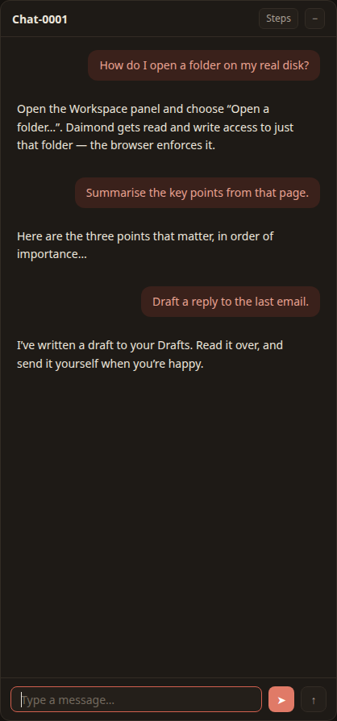
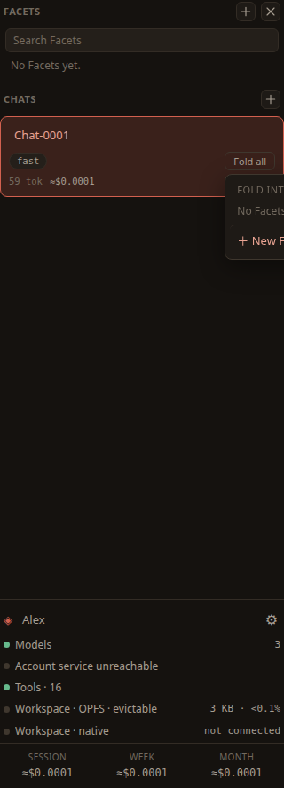

Chats & Facets
A chat is a conversation with the daimon. A Facet is a durable container for a pursuit — where what you have worked out about a piece of work is kept, so that later work starts from it. This page covers starting and reading chats, the turn controls, folding a chat into a Facet, and organising the Facets you accumulate.
Starting and returning to a chat
Choose New chat — the ＋ beside Chats at the top of the rail. Type in the box at the bottom of the centre panel and send with ➤. Every chat you start is listed under Chats in the rail; click one to bring it back to the centre. A new chat starts on your default model; you can change the model for just that chat from the selector in its header.
Reading a long conversation
A conversation grows quickly, so the chat header carries controls to keep it readable. They sit at the top-right of the centre panel.
Steps
The Steps button shows or hides the tool steps in the thread — the work the agent did between your message and its answer. Hide them to read just the conversation; show them to see what it actually did.
Collapse
The − button collapses every answer, leaving what you asked. It is the quickest way to skim a long thread, and it is also how you start picking turns to fold.
Jump back
The ↑ button jumps back to your last message. Press it again to walk back through the ones before it.

Folding a chat into a Facet
When a conversation has worked something out, you fold it: you keep what you learnt and drop the back-and-forth that produced it. What accumulates is a Facet.
Two units make up a Facet:
- A fold is one improvement — a single step forward.
- A brief is what the folds have accumulated: the shape of the work, the steps in their order, and the checks you found the hard way. A Facet is a brief together with the chain of folds that produced it.
Selecting turns and folding them
Collapse the thread with −, then pick the turns worth keeping. A row of controls appears in the header for this:
- Select all — mark every turn.
- Deselect all — clear the selection.
- Fold selected — fold the chosen turns into the Facet.
You fold a step you have adopted, not a passing remark: folding keeps what you learnt, not the transcript.

Working a Facet
Facets are listed above your chats in the rail; add one with the ＋ beside Facets. Selecting a Facet replaces the chat in the centre with its command surface — a compact view where you steer the work and fold further improvements into it. The conversation returns the moment you pick a chat again, because Daimond is built around the conversation and comes back to it whenever the stage would otherwise be empty.
What a Facet does, and what it does not
A Facet retains; it does not run. Nothing executes a brief. There is no workflow engine behind a Facet, nothing schedules it, nothing chains one Facet to another, and there is no saved job waiting to fire. Returning to a Facet does not set it going — and neither does leaving it alone, since a Facet at rest stays exactly as you left it.
So picking it up again means you steer it again, with everything it has learnt already in hand. That is the whole of the claim, and it is worth more than it sounds. The brief is prose, and prose is what a model reads best: it is handed to the daimon as context when you work the Facet, and to every worker dispatched from it. What you worked out once reaches the work again without you retyping it — or remembering that you should.
The brief and its history
The brief is a real file — brief.md, in the Facet's own folder in your workspace. You can open it, read it, and edit it yourself, like any other file.
Every write to a brief snapshots a version, so a brief has a history and nothing is written over. The history lists every version, newest first, each with what produced it:
- View — read that version.
- Restore — make that version current again.
- Delta — see the raw input a fold consumed, the material the agent was given to reduce.
Artefacts
A Facet also keeps track of what its work touched: the files written and the pages opened while you were working on it. You do not have to record any of this. Daimond already notes every tool an agent uses, so the list is read off what happened — and it is gathered at the moment you accept a fold.
Files that were only read are left out on purpose. An agent may open forty files looking for one thing, and listing all forty would bury the one that mattered. What is kept is what the work produced, and the pages you asked to see.
When a Facet has any, a line above the steer box says how many. Clicking it opens the list, where each entry does three things:
- The name opens it — a file in the Doc panel, a page in the Web panel.
- The small arrow puts a reference to it in the steer box, so you can say "redo the figures in this one" without typing out the path.
- The cross removes it, if it does not belong to this Facet after all.
Dispatching workers
Some tasks want work done rather than merely recorded. For those, the Facet's conductor dispatches a worker agent. Each worker runs in its own context with the workspace file tools, and is given the standing instructions and this Facet's brief. That brief is the whole of what it knows about your pursuit — a worker cannot see your conversation, so the task it is handed must say everything else it needs.
Up to eight workers run at once; the rest queue. The conductor dispatches them and its turn ends there: it does not receive their output. Each reports a summary, and you fold the ones worth keeping in by hand — which is what keeps the choice of what enters a brief yours. Live runs appear in the Agents panel in the dock.
Holding and stopping agents
The Agents panel header carries three controls that act on every agent at once, and the same three ride on each tile so you can act on one:
- Pause ⏸ — hang up what is running and hold the queue. A running agent keeps whatever it had produced; a waiting one simply does not start. Nothing new launches until you resume. This is the brake for a fan-out that is spending faster than you meant.
- Resume ▶ — continue every paused agent from where it left off. It picks up its own work rather than starting over, so a pause costs you nothing but the wait.
- Stop ✕ — end agents outright. Each keeps what it managed to do, as a stopped tile; Clear removes them. This is the instant kill switch.
Each tile also shows its cost as it runs — the tokens and dollars accruing live, not just once the agent finishes — so you can see what an agent is spending while deciding whether to hold it. Under the header a line reads how many agents are running, paused and queued, so the size — and the cost — of a fan-out is legible at a glance. Together these are your defence against a runaway; the measures Daimond takes on its own are on the Spending page.
Two limits are worth knowing. A worker cannot dispatch another worker, so delegation goes one level and stops. And one Facet is steered at a time, so there is no second Facet working away while your back is turned.
Tags
Facets accumulate, so they can be tagged. A tag is a short label you choose. The editor suggests four to start from — person, project, topic and org — but Daimond imposes no taxonomy on you, and you can type whatever suits your work.
What you type is tidied: a tag is lowercased, trimmed and deduplicated, with up to 8 tags on a Facet and up to 24 characters in each. Tags are stored in the Facet's own meta, on this device, like everything else.
Above the list is a search box, which matches on the name of a Facet and on its tags. It does not search brief content. Clicking a tag chip filters the list to that tag, and the list is ordered by most recently touched, so what you last worked on sits at the top.